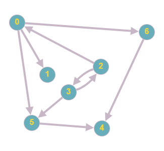
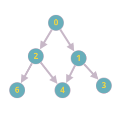
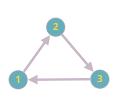
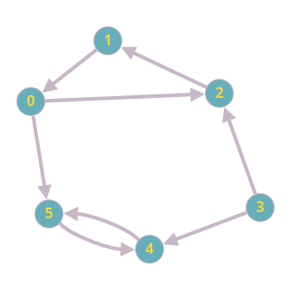
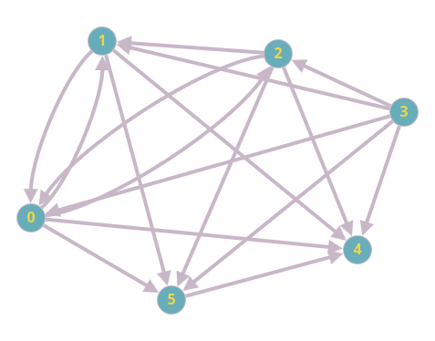

Grafos
Grafos dirigido
- A ideia dos grafos dirigidos é que agora as arestas dos grafos agora possuem direções, diferente de alguns de nossos grafos mostrados anteriormente onde dentro das matriz de adjacências ou da lista de adjacências sempre que A apontava para B, ou vet[A][B] é verdade, o nosso B apontava para A e vet[B][A] também era verdade. No caso do grafo dirigido temos uma via de mão única onde se A aponta para B, B não aponta para A por regra.
Grafo 5: Grafo dirigido exemplo
Fonte - Autoral
Agora vamos observar abaixo a lista encadeada abaixo onde podemos ver como é a formação de uma lista encadeada para essa situação de um dígrafo. Não há uma grande diferença para com a lista encadeada para um grafo tradicional, sua única difrença é que por regra se A aponta para B, B Não aponta para A, mas como é possível analisar a relação dos vértices 2 e 3, eles apontam um para o outro, mas diferente de um grafo normal isso não é uma regra.
Imagem 4: Lista encadeada de grafo dirigido (exemplo acima)
Fonte - Autoral
-
O máximo de arestas em um grafo dirigido sem laços é v(v-1).
-
Grafo dirigido (ou dígrafo): É um conjunto de vértices e um conjunto de arestas dirigidas que conectam um par de vértices (Sem arestas duplicadas). Dizemos que essa aresta vai de um primeiro vértice para o seu segundo vértice.
-
Edge{int v, int w}, v é o primeiro e w é o segundo, ou seja ele vai de v para w (novamente enfatizando que não obrigatóriamente esse w volta para v).
-
Caminho dirigido: Em um grafo dirigido a lista de vértices no qual existe uma resta dirigida conectando cada vértice da lista a seu sucessor. Dizemos de um vértice t é alcançável de um vértice s se existe um caminho dirigido de s a t.
-
Quantidade de arestas em um grafo não dirigido é [v(v-1)]/2, já em um grafo dirigido temos v(v-1).
Como inverter as arestas de um grafo dirigido com listas encadeadas?>
Graph GRAPHReverse(Graph G){
int v;
link t;
Graph R = GRAPHInit(G->v); // Iniciamos um segundo Grafo com a função de inicializar o grafo com a mesma quantidade de vértices
for (v=0; v < G->V; v++) // Percorremos os vértices
for(t=G->adj[v]; t != NULL; t=t->next) // Para cada aresta t, conectada a partir de V
GRAPHinsert(R, EDGE(t->v, v)); // Agora inserimos cada aresta apoontada de forma invertida
return R;
}
Como inverter as arestas de um grafo dirigido com matriz de adjacêcias?>
Graph GRAPHReverse(Graph G) {
int i, j;
Graph R = GRAPHInit(G->V); // Cria grafo com mesma quantidade de vértices
for (i = 0; i < G->V; i++) {
for (j = 0; j < G->V; j++) {
if (G->adj[i][j] == 1) { // Existe uma aresta de i para j
R->adj[j][i] = 1; // No grafo reverso, vai de j para i
}
}
}
return R;
}
DAG
- Grafo dirigido acíclico (DAG - Directed aciclic graph): Grafo dirigido que não possiu ciclos (Árvores).
- Quando eu digo que temos um DAG quero dizer que um vértice não volta para um vértice que está acima na ordem topológica. Veja o exemplo abaixo:
Grafo 6: Grafo dirigido acíclico
Fonte - Autoral
Grafo dirigido fortemente conexo
- Grafo dirigido fortemente conexo: Acontece se todos os vértices são alcançáveis a partir de todos os vérices.
Grafo 7: Grafo dirigido fortemente conexo
Fonte - Autoral
Alcançabilidade e fecho transitivo
- Fecho transitivo de um grafo dirigido é um grafo dirigido com um mesmo conjunto de vértices, mas com uma aresta de s a t no fecho transitico, se e somente se existe um caminho dirigido de s a t no grafo dirigido
Grafo 8: Grafo dirigido exemplo pára fexho transitivo
Fonte - Autoral
O fecho transitivo desse grafo segue abaixo:
Imagem 5: Exemplo de fecho transitivo
Fonte - Autoral
Resumindo então o fecho transitivo seria um grafo que não conecta somente aos adjacentes apontados, mas também faça uma conexão direta entre o ponto de onde ele sai e o vértice que ele aponta leva ele, ou seja se A->B e B->C, colocamos que o vértice A->B, A->C e B->C.
Algoritmo Floyd Warshal
- Complexidade alta: Tende a n³, mas resolve todos os fechos transitivos de uma vez só.
Algoritmo Floyd Warshal para matriz de ajacências GRAPHtc
void GRAPHtc(GRAPH G){
int i, s, t;
G->tc = MATRIZint(G->V, G->V, 0); // Teve que ser modificado na estrutura grafo, somente adicionar um ponteiro de ponteiro chamado tc
for(s = 0; s < G->V; s++)
for(t = 0; t < G->V; t++)
G->tc[s][t] = G->adj[s][t]; // Isso para cima é para percorrer os vértices para copiar as conexões que já temos no grafo
for(s = 0; s < G->V; s++)
G->tc[s][s] = 1; // Indicando que ele alcança ele mesmo
for(i = 0;. i < G->V; i++)
for(s = 0; s < G->V; s++)
if(G->tc[s][i] == 1)
for(t = 0; t < G->V; t++)
if(G->tc[i][t] == 1)
G->tc[s][t] = 1;
}
A chamada dessa função, então:
int GRAPHreach(Graph G, int s, int t){
return G->tc[s][t];
}
Nesse caso é melhor utilizar a matriz de adjacências, já que esse grafo agora vai possuir muitas arestas, ou seja, a economia de memória que a gente ia ter com a nossa lista de adjacências, já não é mais tão vantajosa em relação a matriz de adjacências, e pior a nossa pergunta se nosso vértice s, tem conexão com com t ia ter custo O(V), porque teria que percorrer todos os vértices, com quem o vértice s tem conexão, mas o t pode não estar, então precisamos de v-1, para encontrar, já com matriz de adjacências a consulta para isso tem custo O(1).
O custo desse algoritmo é n³, tornando ele bem caro para os algoritmos que vemos na matéria.
Resumo dos algoritmos
A função GRAPHtc é responsável por preparar a estrutura de dados (G->tc), e a função GRAPHreach é usada para consultar rapidamente essa estrutura, respondendo se um vértice alcança outro no grafo. Essa separação é comum em algoritmos que fazem um pré-processamento caro, mas permitem consultas rápidas depois.